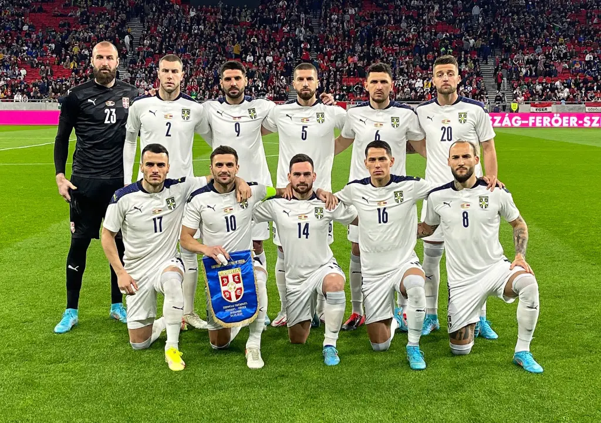

Apesar de estrear apenas em 2010 representando apenas a Sérvia, os sérvios participaram de dez edições da Copa do Mundo de futebol. Para a FIFA, a Seleção da Sérvia é sucessora das seleções da Iugoslávia e da Sérvia e Montenegro.
Não obteve títulos em Copa do Mundo.
| Data/Hora | Estádio | Adversário |
|---|---|---|
| 24 nov 2022 / 16h00 | Estádio Nacional de Lusail | Brasil |
| 28 nov 2022 / 07h00 | Estádio Al Janoub | Camarões |
| 2 dez 2022 / 16h00 | Estádio 974 (Estádio Ras Abu Aboud) | Suíça |